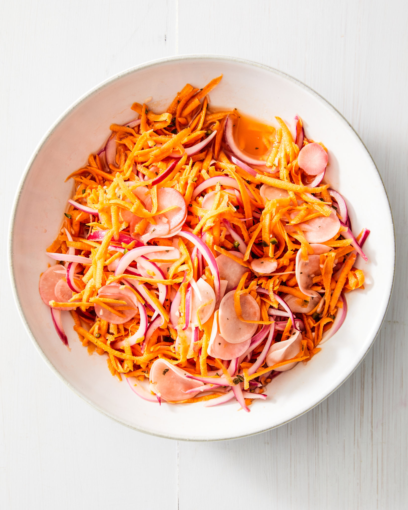

Pikliz

Pikliz is a spicy Haitian pickled slaw made with shredded cabbage, carrots, onions, and Scotch bonnet peppers, all soaked in a tangy vinegar brine. It’s traditionally served as a zesty, crunchy condiment alongside fried dishes like griot and fried plantains.
Ingredients
- Shredded cabbage
- Grated or thinly sliced carrots
- Thinly sliced onions (or shallots)
- Thinly sliced onions (or shallots)
- Minced or sliced garlic
Steps
- Prep the Vegetables
- Mix the Ingredients
- Pack Into a Jar
- Add the Brine
- Seal and Refrigerate
- Serve
Home